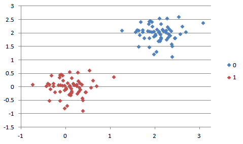
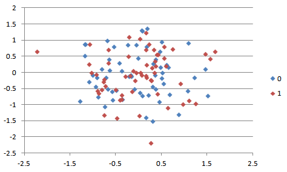
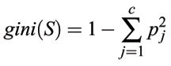
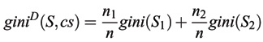

- Rhymes with Orange ©
Choices so many
If only something could help
Go decision trees!
This project is intended to familiarize you with one of the standard approaches to classification problems, decision trees. You will code up decision tree learning and then apply it to several relatively simple problems. The hope is that, as you work on this project, you will come to understand the supervised learning process.
This project has two parts. In the first part, you will code up decision tree learning (in two ways) and test it on various data sets. In the second part, you will provide a writeup discussing the results.
This project will be done in Python. Your submission should consist of your code and your writeup. For the code, it should all be in project4.py (attached below); follow the standard submission convention you used in projects 1-3. For the writeup, publish it as a pdf document and include it with your submission as a separate file. In addition we require you to implement command line calling convention (more on this later in the assignment). Please do not deviate from this.
Evaluation: Your code will be graded for technical correctness and performance on the given datasets. Your write up will be graded based on your interpretation of these results.
Academic Dishonesty: We will be checking your code against other submissions in the class for logical redundancy. If you copy someone else's code and submit it with minor changes, we will know. These cheat detectors are quite hard to fool, so please don't try. We trust you all to submit your own work only; please don't let us down. If you do, we will pursue the strongest consequences available to us.
Getting Help: You are not alone! If you find yourself stuck on something, contact the course staff for help either during Office Hours or over email/piazza. We want these projects to be rewarding and instructional, not frustrating and demoralizing. But, we don't know when or how to help unless you ask.
A classification problem is a problem where you classify instances into classes based on their features. For example, given the features length_gt_5, has_teeth, big_and_scary, and flies, we classify into monster and not_monster.
length_gt_5=y, has_teeth=y, big_and_scary=y, flies=n --> monster
length_gt_5=n, has_teeth=n, big_and_scary=y, flies=y --> monster
length_gt_5=n, has_teeth=n, big_and_scary=n, flies=n --> not_monster
length_gt_5=n, has_teeth=n, big_and_scary=y, flies=n --> not_monster
...
Other possible classification problems would include "Should I date this person or not?" or "Is this a good investment?" or "Animal or not?" or "Is this the picture of a man or a woman?"
A classification problem consists of four variables:
Part 1(a): Implement decision tree learning with an information gain criteria for selecting the next attribute in the tree, as described in detail in Russell & Novrig 18.3.
For testing purposes, we have provided two datasets, which are in the format described above. The datasets are found in project4.py. Both data sets are binary classification tasks with binary attributes, which means that you only have to implement binary classification for decision trees. Note that the format of the data determines the inputs to your decision tree algorithm, which should follow the general pattern of supervised learning. You are responsible for designing the data structures and functions required to implement decision tree learning on these data sets.
Additionally, we provide two more extra credit data sets that are binary classification tasks with numeric attributes. For your convenience, and because they have only two attributes, we have graphed data sets #3-4:
Data Set #3:

Data Set #4:

Your algorithm should work on data sets #1-2 for full credit. Note that data sets #3-4 are extra credit. You can ignore data sets #5-6. You will be responsible for coming up with a way to tackle this for extra credit (10% of this project's grade), but to receive this extra credit, your code must work for BOTH sets (3 and 4).
Please provide accuracy statistics for your algorithm on the data sets you run them on. WE WILL BE CHECKING THESE AND GRADING YOU BASED ON IT. An accuracy statistic is defined as the percentage of examples the algorithm classified correctly. You should provide accuracy statistics for BOTH the training and testing examples of ALL the data sets.
In terms of coding conventions, you are free to deviate from the "framework" we provided in project4.py. However, your code must run from the command line with arguments for testing and training data, and which learning method. The format for arguments should be [training] [testing] [method]. Each dataset should be called train# or test#. To use training set 1, test set 1, and information gain, for example, this is how the command line should appear:
python project4.py train1 test1 infogain
To use training set 2, test set 2, and the Gini index the command to run your code should look like this:
python project4.py train2 test2 gini
Note that the data sets we'll use for testing your implementation will correspond to the same training and testing sets you're given. Feel free to use any of the utility functions, but make sure your implementation compiles or else we won't be able to run it and you will have points taken off. DO NOT rename the command line arguments or change the calling conventions.
Part 1(b): Now that you have completed the standard decision tree learning approach, you will now implement another mechanism for splitting attributes, called the GINI index.
The gini index function can be used to evaluate the goodness of all the potential split points along all the attributes. Consider a dataset S consisting of n records, each belonging to one of the c classes. The gini index for the set S is defined as:

where pj is the relative frequency of class j in S. If S is partitioned into two subsets S1 and S2, the index of the partitioned data can be obtained by:

where n1 and n2 are the number of examples of S1 and S2, respectively, and cs is the splitting criterion. Here the attribute with the minimum gini index is chosen as the best attribute to split.
Details are exactly the same as part a: Your algorithm should work on data sets #1-2 for full credit. Note that data sets #3-4 are extra credit. You can ignore data sets #5-6. You will be responsible for coming up with a way to tackle this for extra credit (10% of this project's grade), but to receive this extra credit, your code must work for BOTH sets (3 and 4).
Please provide accuracy statistics for your algorithm on the data sets you run them on. WE WILL BE CHECKING THESE AND GRADING YOU BASED ON IT. An accuracy statistic is defined as the percentage of examples the algorithm classified correctly. You should provide accuracy statistics for BOTH the training and testing examples of ALL the data sets.
The analysis should be provided in 1-2 paragraphs. We are not looking for a novel but we expect something more than a few sentences. The submission should be in pdf format, titled analysis.pdf. Here are the questions it should answer:
Do not rename our files, do not zip the files, do not leave debugging statements in your code. Only submit these files: